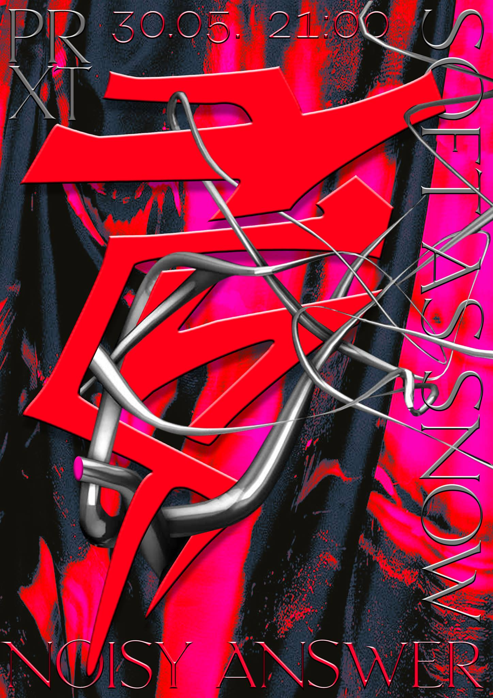

In case you can’t wait to see her show at Claws of Saurtopia Noisefest #6:
supaKC X Noisy answer is playing at
π®åçh† tonight, sharing the bill with noise-pop duo Soft as Snow (out on Houndstooth). Not to be
missed!
Doors: 9pm (almost now!)

Soft as Snow (Houndstooth)
The
Norwegian duo »Soft as Snow« makes leftfield psych-out Pop “next to the
bleeding edge of dance music”. Imagine »Fever Ray« twice, armed with
laser guns trying to make analogue synth-pop songs at a 90’s Warp
Records showcase. Mesmerizing, pervasive, uncanny!
Soft As Snow
just released their debut album on Houndstooth. It was created by band
members Oda Egjar Starheim and Øystein Monsen, with additional mixing
and production by WIFE of Tri Angle Records
Noisy answer (supaKC)
Noisy
Answer is the freshest alias of Leipzig-based DJ & producer
»supaKC« indulging her passion for dreamy, drum-machine driven dance
music and expressive synth sounds.